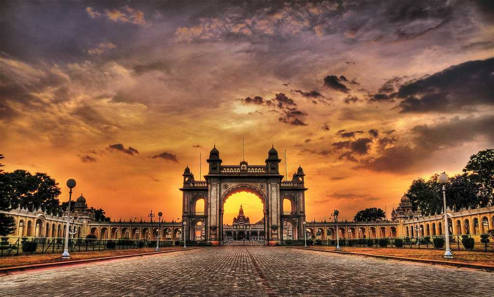
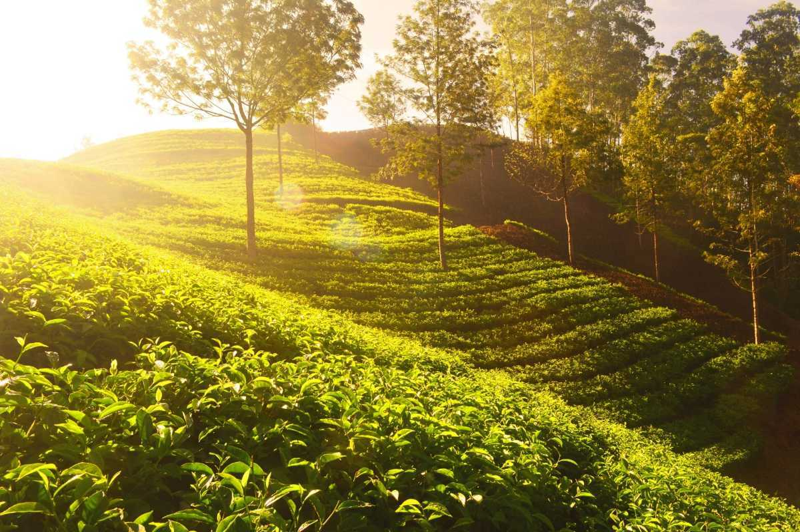
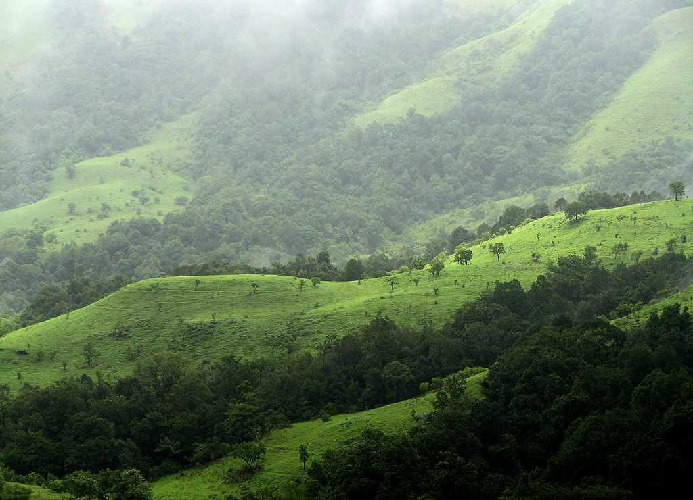
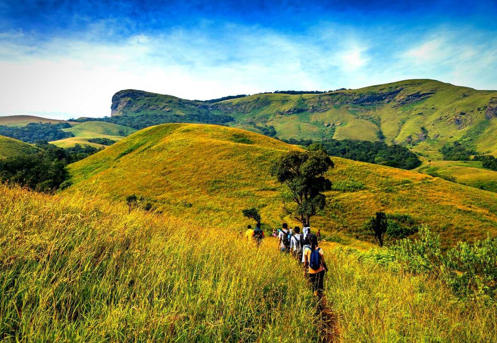

This sacred mountain also known as Revatak Parvata, rising dramatically from the plains, is covered with Jain and Hindu temples. Pilgrims from far and wide come to tackle the long climb up 10,000 stone steps to the summit, which is best begun at dawn. Be prepared to spend a full day if you want to reach the uppermost temples. Ascending in the early morning light is a magical experience, as pilgrims and porters trudge up the steps.

Famously known as The City of Palaces, it wouldn’t be wrong to say that Mysore, currently Mysuru, is one of the most important places in the country regarding ancient reigns. It is replete with the history of its dazzling royal heritage, intricate architecture, its famed silk sarees, yoga, and sandalwood, to name just a few.
Udupi is a coastal town in Karnataka, most famous for its vegetarian cuisine and South Indian restaurants all over the country.
With its pristine beaches and breathtaking landscapes, Gokarna is a Hindu pilgrimage town in Karnataka and a newly found hub for beach lovers and hippies. Situated on the coast of Karwar, every year Gokarna welcomes hordes of tourists from around the world in search of sanctity and relaxation.

Popularly known as the ‘Coffee Land of Karnataka’, Chikmagalur is situated in the foothills of the Mullayangiri Range and is one of the most beautiful hill stations in Karnataka. Chikmagalur has a perpetual fragrance of coffee lingering in the air with it plenty of coffee plantations.

The second-highest plunge waterfall in India, Jog Falls is a major tourist attraction in Karnataka and is the highest waterfall in the state. Second, to the Nohkalikai Falls of Meghalaya, Jog falls drops about a huge 253 m (850 ft. ) in a single fall.
Having evolved gradually from being the Garden city to the Silicon Valley of India, Bangalore is India's third-largest city.
Located around 245 km from Bangalore, Kabini is primarily known for its handful of luxury resorts around the Kabini River and Nagarhole National Park in the vicinity. Please note that there are not many budget-friendly accommodations near Kabini River.

A hill station of widespread views and scents of beautiful gardens, Kemmanagundi or KR hills offer a perfect summer retreat for nature lovers and adventure enthusiasts. The area also has trekking, nature walks and picnics.

Popular and named after a mountainside that resembles a horse's face, Kudremukh is famous for its biodiversity and scenic beauty.
With nature in its full bloom, the town of Shimoga has been home to several great dynasties and kingdoms. Packed with several marvels of nature in the form of picturesque landscape, gorgeous waterfalls, mystical temples and lush green surroundings, its raw beauty will leave you absolutely enchanted.
Masinagudi is a quaint hill station located just a 1-hour drive away from Ooty. The Mudumalai National Park is the highlight here and is popular amongst visitors.